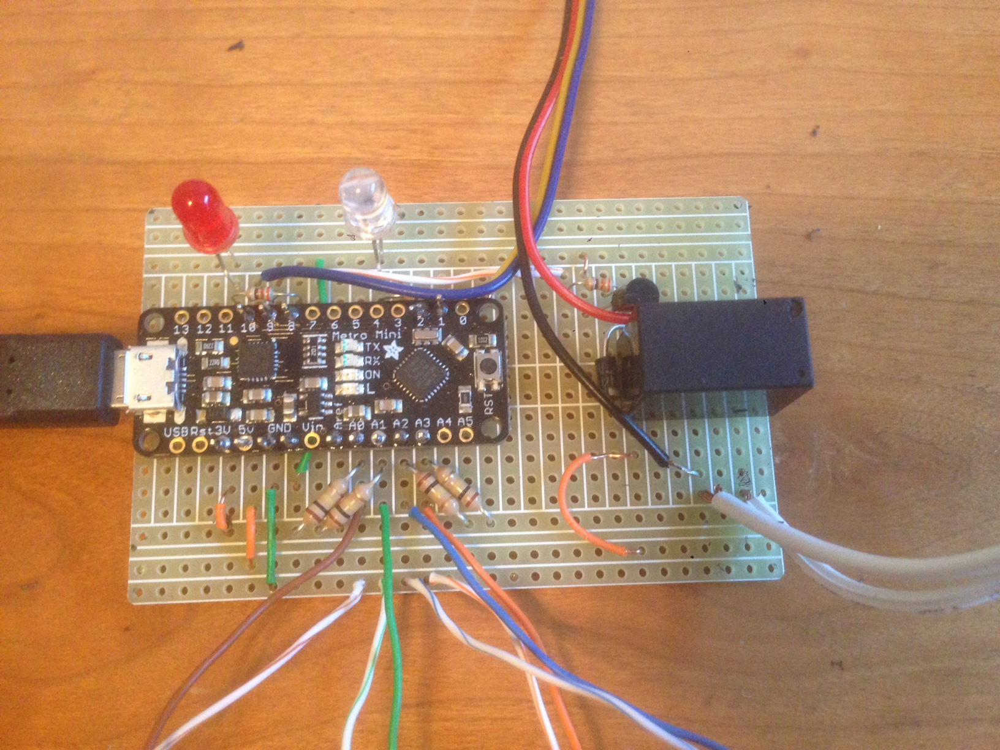
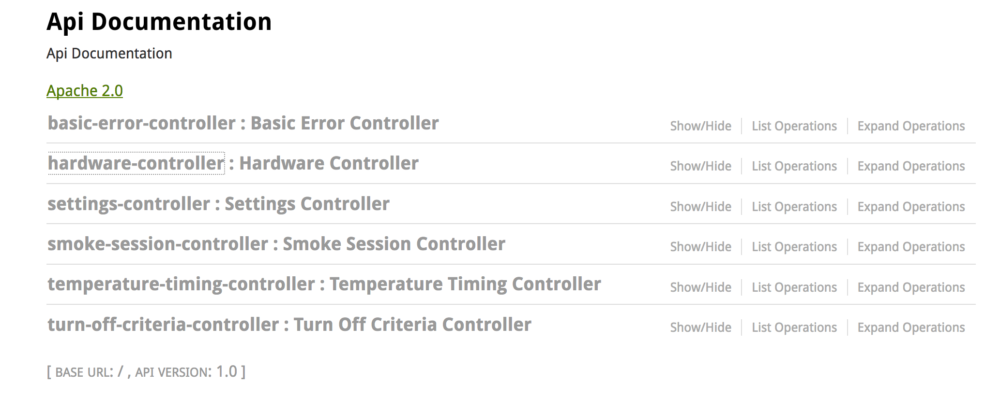
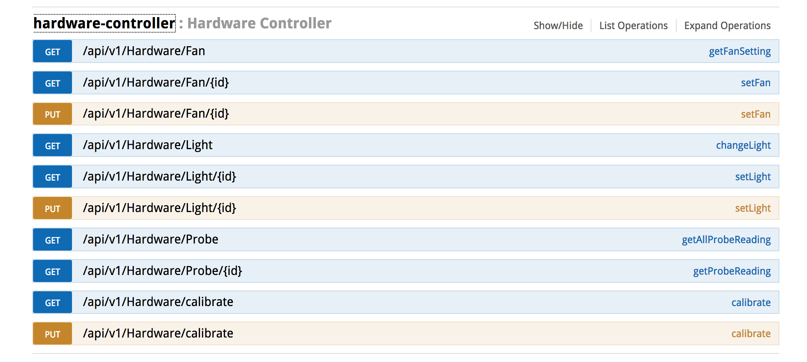

Welcome to the STB BBQ controller. This document contains instructions on how to build the hardware and install the software.
Table of Contents
Hardware
Software
Usage
1.1 Components:
Arduino Metro Mini – 5v
Raspberry Pi 3 (Model B)
Micro SD Card
USB to USB micro B
Box to house the project
4 BBQ temperature probes - https://www.acurite.com/accessories-parts/acurite-cooking-replacement-parts.html
External power supply (12v with USB output)
Fan extension cable
Electrical Components:
1 – Breadboard
4 – 2.5mm mono headphone jack - http://www.allelectronics.com/make-a-store/item/smmj/2.5mm-mono-jack/1.html
1 – SPDT relay – https://amzn.com/B01H47YTJ4
1 – diode – http://www.allelectronics.com/make-a-store/item/1n4007/rectifier-diode-1amp/1000piv/1.html
2 – LED lights (we used 1 red and 1 white)
3 – 1kOhm resistors
4 – 1M/100K/10K resistors – must match the nominal resistance of the probes.
1 – 2n3904 transistor
1 – power connector compatible the power supply.
1 – PWM computer fan (typically a 4 wire computer fan. Blue is usually the PWM lead)
Note that our controller used a power supply that has both 12v and 5v USB outputs. This was an expensive choice. A better option would have been to get a simple 12v power brick and an automotive power port to USB converter, pull it apart and use that to convert to 5v for the Raspberry Pi.
Misc
Wire
Solder
Soldering Iron
Drill
Dremel Tool
Voltage/resistance meter
1.2 Circuits
The below diagram illustrates the circuits to build. I recommend using a solderless breadboard to start laying out the circuits. Once you get it laid out and tested to your satisfaction, then break out the soldering iron.
Keep in mind the pins can be changed somewhat. The software is configured to use the pins specified, so that will need to be changed.
There are other things to be aware of:
Only some outputs are PWM enabled, so if you change the PWM pin, make sure it is a PWM enabled output.
D0 and D1 are also serial port pins, which is in use via the USB cable to talk with the PI. Do not use them.
1: Probe Circuit
This is a simple voltage divider circuit. If the probe and the resistor are the same, the analog input should read exactly half the input voltage. As the probe changes resistance, the reading at the analog input changes. The Arduino reads that change and the software converts it into a temperature value.
For the probes, you will need to build 4, one connected to each of the analog inputs A0 – A3 on the Arduino. Mount the 2.5mm headphone jack to the case and wire that to the circuit. The probes we used have a braided sheath that is part of the circuit. When wiring the headphone jack, make sure the analog input is on the deep part of the jack, and the ground is connected to the sheath.
Make sure the resistor (1M Ohm in the diagram) matches the nominal resistance of the probes. When you get the probes, take the Ohm meter and measure it. It should be close to 1M, or 100k or 10k Ohm. Use a matching resistor.
The 3.3v output on the Arduino is regulated, so it should give a cleaner signal. Connect it to the AREF input on the Arduino.
2: Light Circuit
Run a 1k ohm resistor to the LED. One LED is used to indicate that the fan is on. The other indicates that the system is working. On is ready, blinking is running a session. These lights should be mounted on the box so that they can be seen.
3: Fan Circuit
This circuit is using a transistor to control the coil side of a relay. This prevents the relay from drawing too much power off of the Arduino pin. The relay controls the 12v power to the fan. This only controls on/off. The D10 PWM pin on the Arduino adjusts the fan speed.
Review the pinout for the relay. There are 2 output pins, one normally open, the other normally closed. The fan should be on the normally open pin (aka, no power when the relay is not energized).
Make sure the fan ground is connected to the 12v ground, NOT the same as the Arduino ground.
Here is what our board looks like.

You can see the 4 pairs of probe wires coming off the bottom (and yes, those are cat5 pairs, sometimes you use what you have handy). The LED lights are mounted directly on the board. The board is attached to the top of the case and those lights stick through.
Go to www.somewhere.com and download the software. This repo contains both the Arduino and the Raspberry pi software.
You will need to install the Arduino SDK on the Raspberry Pi. Under the src/main/resources directory is a file: TempComm.ino file. Open that with the Arduino SDK. Upload it to the Arduino. If everything goes well, you can open the Serial Monitor and start sending commands to the Arduino. The commands are comma “,” separated and semi-colon “;” terminated. Probe are 1-4, the fan is 5, and the system LED is 6. So, to read all 4 probes, send the command: “1,2,3,4;” (without the quotes). The Arduino should return something like “1=459,2=547,3=548,4=551;”. Those numbers are the raw analog readings. If you want to set the fan, send in “5=255;” and see what happens. The Fan takes 0-255. The system light is 0=off and >0 is on. The Arduino will return the current value, which should be the value you just sent it.
2.2 Raspberry Pi
The latest Raspberry Pi has built in WIFI. You will need to connect your Pi to your WIFI. You can do that via the desktop or you can do it via the command line. See this link for more details: http://weworkweplay.com/play/automatically-connect-a-raspberry-pi-to-a-wifi-network/
Running a “./mvnw clean install” from inside the directory will build the software and package everything into a nice spring boot executable jar file in the target directory. If you are doing this on the Pi, you can run it from there, otherwise you will have to scp it to the Pi: “scp target/smoker.VERSION.SNAPSHOT.jar pi@Pi.ip.address:.”. Once on the Pi, run it with the following command: “sudo java -jar smoker.VERSION.SNAPSHOT.jar &”. Then load up your favorite web browser and go to http://PI.ip.address and you will see the very basic index.html page.
3 Usage
There currently isn’t a nice web interface for this app. All commands need to be given via REST calls. Once on the index.html page, there is a link to the swagger documentation. Swagger will help you create those REST calls.
Once you get the software up and running, add the command “sudo java -jar smoker.VERSION.SNAPSHOT.jar &” to the /etc/rc.local file so that it starts up when the Raspberry Pi starts up.

Lets start with the hardware-controller. This gives basic direct access to the hardware. You can read temperatures off the probes, turn the light off/on, as well as set the fan.

Feel free to try these out. Most are self explanatory
3.1 Calibration
Each brand of probe needs to be calibrated. That number is called BETA. To calibrate the probes, place them in boiling water. You can either use a known accurate thermometer to verify the temperature, or you can assume you are close to the 212ºf boiling point (We are at about 4600 ft, so water boils at 208ºf±). Once the probes are in and the water is boiling, use the calibrate link and send in the temperature in ºKelvin. This will provide new BETA values for each probe. Average them and set those in the application.properties files (dev, test, prod, default). The setting is “thermometer.calibration.beta=4120”. You will need to rebuild and redeploy the app for those new settings to take effect.
3.2 Software Overview
There are a few concepts to understand:
temperature-timing and temperature-timing-details: This defines the target temperature and how long it should maintain that temperature. The temperature-timing is merely a grouping of details. The details have a target temperature, time at temperature, as well as an order. So if you want to smoke ribs at a 3-2-1 (3 hours smoke, 2 hours at 220, and 1 hour at smoke), there is a program to do that.
Turn-off-criteria: This can be linked to a temperature timing. This allows you to specify which probes (comma separated list) and a target temperature. Once all probes are at or above that temp, it will shut down the fan and end the smoking session.
Smoke-Session: This is the individual cooking instance. You start this off by sending in a few details. Something like:
{ "description": "string", "id": 0, "meat": "string", "referenceThermometer": 1, "temperatureTimingId": 4 }That will kick off a smoking session with probe 1 as its ambient thermometer, using the temperature timing “program” #4. The id field is set by the controller and will be returned in the response. The response will look something like:
{
"id":
76,
"meat":
"test",
"referenceThermometer":
1,
"startDate":
1473183735470,
"description":
"string",
"smokeSessionDetail":
[],
"temperatureTimingId":
4
}
The id will allow you to get updates on the session, including the full details. By default, every minute the program saves the probe values, its temp timing target and fan value. The data is persisted on the Pi, so you can review the data at your leisure.
3.3 Cooking
Place probe 1 in the smoker. Preferably not where it will get direct radiant heat from the coals. This is the reference probe, and is used to set the target temperature. Hook up the fan to the air input on your smoker. We used a 3” to 1” PVC reducer to hook up to a 1” air inlet on the smoker. We used HVAC tape to tape the fan to the PVC. Close other air inlets. Start your coals burning, making sure you have enough to burn the whole time. Set your meat and put the other probes in the meat. Plug in the controller and wait for the system light to turn on. Usually about 90 seconds. Connect to the swagger interface and create your smoke session. The controller takes readings for 1 minute before activating the fan, so don’t worry if it doesn’t start up immediately. You can now go in the house and monitor it from there. Watch the /api/v1/smoke_session/{id}/details for the latest readings.